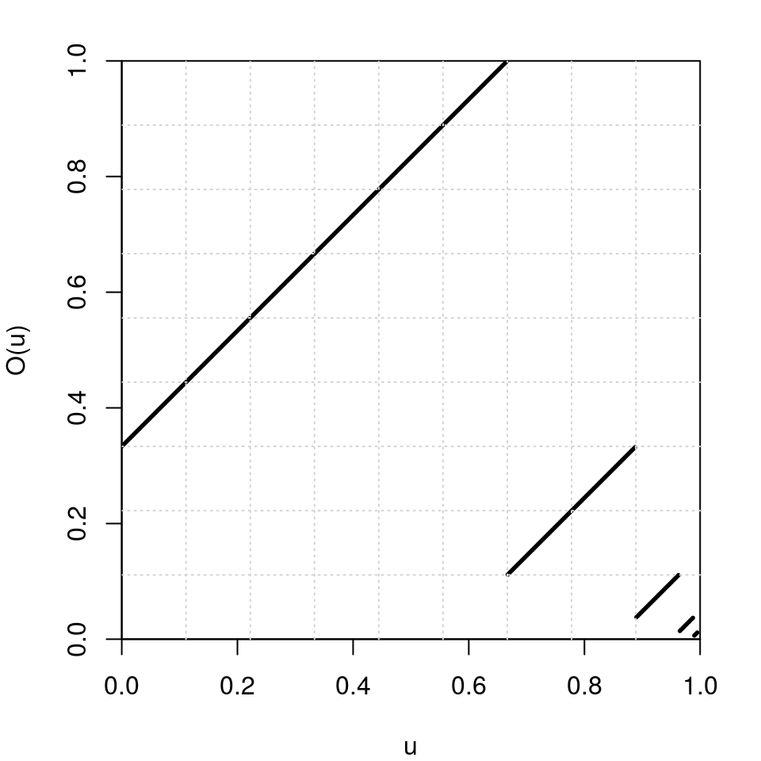

-
The expansions package: integer and float expansions, and odometers
2016-08-13
SourceI released the
expansionspackage for R. To install it, follow the instructions given on my repo.Expansions of integer and real numbers
Conversion of decimal integers to integer base
This is the role of the
intAtBasefunction:intAtBase(14, base=3) ## [1] 2 1 1 2*1 + 1*3 + 1*3^2 ## [1] 14The
intAtBasePowerfunction returns the expansion of the integer \(m^p\) where \(m\) and \(p\) are supplied by the user:intAtBasePower(2, 5, base=3) == intAtBase(2^5, base=3) ## [1] TRUE TRUE TRUE TRUEThe advantage is the possibility to convert huge numbers \(m^p\):
intAtBase(2^100, base=3) ## Error in intAtBase(2^100, base = 3): n is too big intAtBasePower(2, 100, base=3) ## [1] 1 2 2 0 1 1 1 1 2 2 0 2 2 0 1 1 0 0 2 1 0 2 0 2 1 0 0 2 2 1 0 1 1 0 0 ## [36] 0 0 1 1 1 2 2 1 0 0 0 0 2 2 2 1 2 0 2 1 0 1 0 2 2 2 0 0 1The
intAtBaseFibfunction returns the expansion of a Fibonacci number given by its index:intAtBaseFib(6, base=3) == intAtBase(8, base=3) ## [1] TRUE TRUE intAtBaseFib(100, base=3) ## [1] 0 1 2 0 1 2 2 0 0 2 2 0 0 1 0 2 0 2 0 0 1 1 1 1 2 1 2 2 2 0 1 2 0 0 0 ## [36] 0 2 0 1 0 2 0 0 1Cantor expansions, or “ary” expansions
The
intToAryfunction performs the Cantor expansion of an integer. I explained the Cantor expansion in a previous article.# (3,4,7)-expansion of 77: intToAry(77, c(3,4,7)) ## [1] 2 1 6 2*1 + 1*3 + 6*(3*4) ## [1] 77# Cartesian product {0,1}x{0,1}: sapply(0:3, function(x) intToAry(x, sizes=c(2,2))) ## [,1] [,2] [,3] [,4] ## [1,] 0 1 0 1 ## [2,] 0 0 1 1It is implemented with
Rcpp(source code), and it is fast.Float expansions
The
floatExpand01function returns the expansion of a real number between \(0\) and \(1\) to its expansion in a given integer base. For example:floatExpand01(0.625, base=2) ## [1] 1 0 1It means that \(0.625 = 1\times \frac{1}{2} + 0 \times \frac{1}{2^2} + 1 \times \frac{1}{2^2}\).
The
floatExpandfunction returns a list representing the expansion of a positive number in scientific notation: \[ x = 0.d_1d_2\ldots d_n \times \text{base}^e. \] The digits \(d_1\), \(\ldots\), \(d_n\) are given in the first component of the list and the exponent \(e\) is given in the second one. For example:floatExpand(1.125, base=2) ## $digits ## [1] 1 0 0 1 ## ## $exponent ## [1] 1 (1*1/2 + 0*1/2^2 + 0*1/2^3 + 1*1/2^4) * 2^1 ## [1] 1.125Odometers and addition of adic integers
The odometer is the action \(x \mapsto x+1\) on the group of \(b\)-adic integers. In other words, \(x\) is the expansion in an integer base \(b\) of a real number between \(0\) and \(1\), and the odometer maps \(x\) to \(x + (1, 0, 0, \ldots)\) where “\(+\)” is the addition modulo \(b\) with carry to the right.
odometer(c(1,0,1), base=2) ## [1] 0 1 1By transporting the \(3\)-adic integers to \([0,1)\) with the float expansion in base \(3\), let’s have a look at the graph of the \(3\)-adic odometer:
ternary2num <- function(t) sum(t/3^seq_along(t)) num2ternary <- function(u) floatExpand01(u, base=3) par(mar=c(4,4,2,2)) u <- seq(0, 0.995, by=0.0025) Ou <- sapply(u, function(u) ternary2num(odometer(num2ternary(u), base=3))) plot(u, Ou, xlab="u", ylab="O(u)", xlim=c(0,1), ylim=c(0,1), pch=19, cex=.25, pty="s", xaxs="i", yaxs="i") grid(nx=9)
The
expansionspackage also provides the functionsumadicto perform the sum of two adic integers:sumadic(c(0,1), c(1,1,1), base=2) ## [1] 1 0 0 1 identical(sumadic(c(0,1), 1, base=2), odometer(c(0,1), base=2)) ## [1] TRUE
- Home
- About
- PoirotReproducible Blogging with R Markdown
- SlidifyReproducible html5 slides from R markdown
- R-bloggersBlog posts about R, contributed by R bloggers worldwide.
- stla.overblogMy previous blog
- Timely Portfolio A great blog about R, Javascript, and more